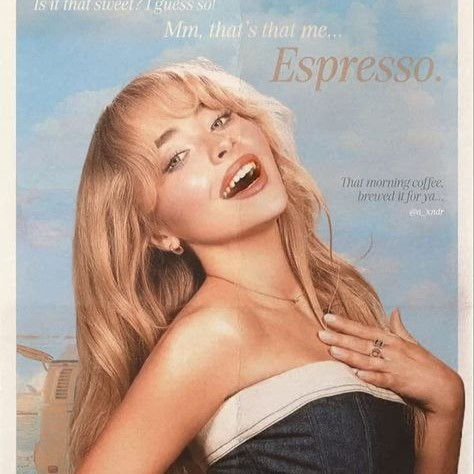

My name is Jannatun Naeema Binti Azliman, I’m a 20-year-old student from Malaysia, currently studying information management at Universiti Teknologi MARA (UiTM). Born on February 26, 2004.
My favorite color, dusty purple, reflects my personality—calm yet full of creativity and depth. I’m driven by a desire to blend creativity with structure in everything I do, whether it’s in my studies or my hobbies, and I’m excited to carve a meaningful path in the ever-evolving field of information management.
My family is the most important part of my life. My parents are the foundation of our family, always there to support and guide us with their care and wisdom. My siblings are my closest friends and we mostly spent our times together, share our dreams, and create wonderful memories together.
Throughout my journey in school and university, I’ve been blessed with amazing friends who have left an indelible mark on my life. In high school, they were my partners in laughter and learning, making even the toughest days enjoyable with their unwavering support. At Universiti Teknologi Mara (UiTM), these friendships have not only shaped my experiences but also inspired me to grow into the person I am today.
| Album Cover | Song Title | Artist |
|---|---|---|
|
|
-Because- | Changbin & Felix (Stray Kids) |
|
|
-Issues- | Julia Michaels |
|

|
-Taste- | Sabrina Carpenter |